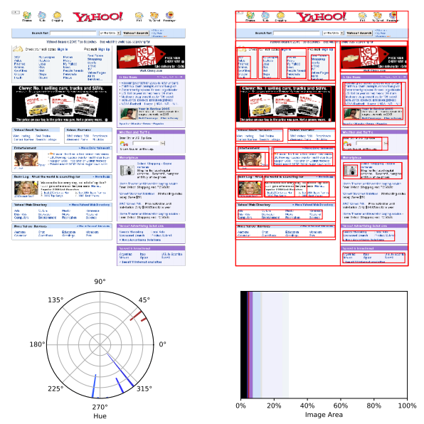
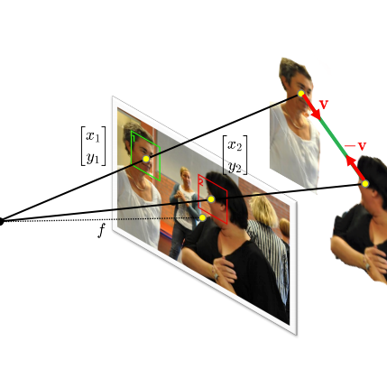
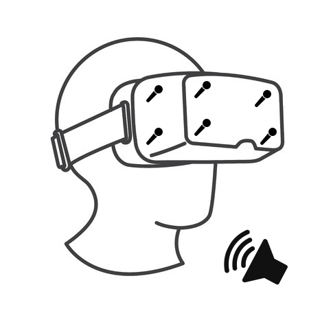
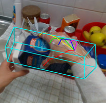
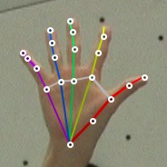
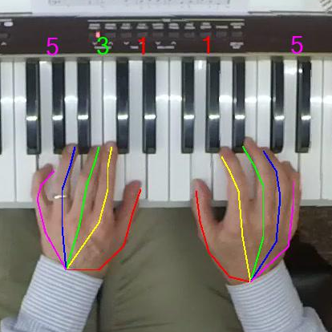
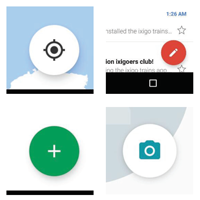
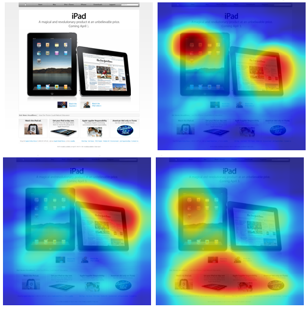

I am a PhD in Computer Science. I worked with Prof. Crandall in the Vision Lab. My research interest is on applying Deep Learning on vision and audio problems. Specifically I am working with Graph-Convolutional and Convolutional Neural Networks for 3D Reconstruction and Hand and Object Pose Estimation.
I spent an amazing summer at Google as a Research Intern. I worked with Tao Dong on designing an Automatic Design Analyzer to detect Material Design components using app view hierarchy and deep convolutional neural networks. We applied this design analyzer to more than 10,000 android apps to study how Material Design is used among apps with different categories, average rating and number of installs.
I also spent 6 wonderful months at Facebook Reality Labs as a research intern during Winter, Spring and Summer 2019 as a research intern. I was working on high-fidelity 3D reconstruction.
I spent Fall 2019 in Google as a research intern. I was working on detecting the social interactions in an image with multiple people in it.
I am now a Research Engineer at Google AR/VR.
I also host Koron Podcast, a podcast in Persian about Persian music.
Curriculum vitaeWork Experience
|
Google AR Research Engineer Kitchener, ON Sep 2021 - Present |
|
|
Google Cloud Platform Software Engineer Kitchener, ON Oct 2020 - Sep 2021 |
|
|
Google AI Research Intern Seattle, WA Sep 2019 - Dec 2019 |
|
|
Facebook Reality Labs Research Intern Redmond, WA Jan 2019 - Jul 2019 |
|
|
Google Research Research Intern Mountain View, CA May 2017 - Aug 2017 |
Publications
|  |
Investigating the Homogenization of Web Design: A Mixed-Methods Approach Samuel Goree, Bardia Doosti, David Crandall, Norman Makoto Su CHI 2021 [pdf] [BibTeX] |
|  |
Boosting Image-based Mutual Gaze Detection using Pseudo 3D Gaze Bardia Doosti, Ching-Hui Chen, Raviteja Vemulapalli, Xuhui Jia, Yukun Zhu, Bradley Green AAAI 2021 [pdf] [BibTeX] [Dataset] |
|  |
C-SL: Contrastive Sound Localization with Inertial-Acoustic Sensors Majid Mirbagheri, Bardia Doosti [pdf] [BibTeX] |
|  |
HOPE-Net: A Graph-based Model for Hand-Object Pose Estimation Bardia Doosti, Shujon Naha, Majid Mirbagheri, David Crandall CVPR 2020 [www] [pdf] [BibTeX] [code] |
|  |
Hand Pose Estimation: A Survey Bardia Doosti [pdf] [BibTeX] |
|  |
Observing Pianist Accuracy and Form with Computer Vision Jangwon Lee, Bardia Doosti, David Cartledge, David Crandall, Christopher Raphael WACV 2019 [pdf] [BibTeX] |
|  |
A Computational Method for Evaluating UI Patterns Bardia Doosti, Tao Dong, Biplab Deka, Jeffrey Nichols [www] [pdf] [BibTeX] |
|  |
A Deep Study into the History of Web Design Bardia Doosti, David Crandall, Norman Makoto Su WebSci 2017 [www] [pdf] [BibTeX] [code] |